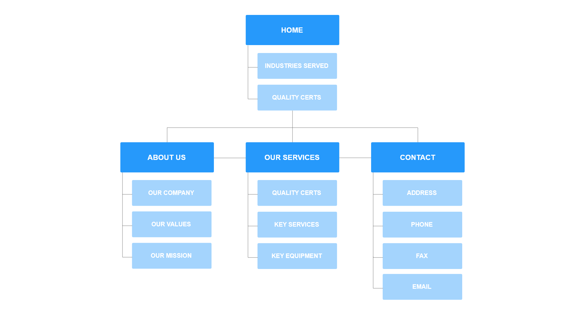

The Scope: UX Strategy and Research
To start off the process, I created a UX Project Plan to present to my client for approval. I wrote the timeline for this process, detailing what each phase was and why it was needed. This not only helped my client understand the UX process, but allowed me to organize the design methods I would need for this project. My client approved the plan, and I was ready to begin.
To understand the scope and business goals of the project, I held stakeholder interviews with the three main department leaders at JPPI: the president, the operations manager, and the production manager. They wanted to expand into more markets and increase potential employee interest by rebranding themselves as a modern, multi-faceted machine shop. Thus, I began the UX research phase of the process.
JPPI Original Website Heuristic Markup
Kimberly Machine Heuristic Markup
Johnson Manufacturing Inc. Heuristic Markup
Competitive Assessment of JPPI and its Competitors
In order to understand the content and design patterns within the machining industry, I conducted a competitive heuristic assessment with three of JPPI’s top competitors and our company website’s original design. I studied the two companies that JPPI considered as direct competitors, but felt they lacked the UX and UI design present in most modern sites. I asked for the client to compile a larger list of possible competitors, in hopes of finding one that I felt incorporated more UX-thinking and design. Fortunately, I was able to find one that met my expectations.
 Content Best Practices of JPPI and its Competitors
Content Best Practices of JPPI and its Competitors
After gathering this research, I condensed the information into a Content Best Practices deliverable to encapsulate what the client’s competitors and original website did well. By analyzing and transforming the data, this helped me understand how to approach the user research and make more educated assumptions about our target users.
To gain insightful qualitative data, I wanted to conduct user interviews and speak to three of each type of user. After speaking with the client, I gathered that the target users were new customers and new employees. I was unfortunately unable to talk to “ideal” users due to budget constraints, so I reached out to JPPI’s most recent hires and most diverse customers. I was able to interview three recent hires, but only one customer was interested in speaking with me. Due to deadlines, I had to keep moving forward, but noted how this would affect my research. I created three user personas from the research I gathered: potential employee, potential customer, and stakeholder. This allowed me to better empathize with the users and get a clearer idea of their needs and pain points.
 JPPI Website Design Brief
JPPI Website Design Brief
Before beginning the design phase, I created a design brief to help get a clearer direction of the website’s overall design. By curating the goals and audience, strategy and tone, requirements and constraints, and finally the approvals and milestones into one deliverable, it acted as my “north star” during the design process.
The Skeleton: Creating the Wireframes

JPPI Sitemap
To start off the design phase, I created a sitemap to establish the product’s information architecture and a framework for the wireframes.
 JPPI Wireframes Pattern Library
JPPI Wireframes Pattern Library
I drew from the analysis reports as well, and created a wireframes pattern library to keep consistent design components.
JPPI Desktop and Mobile Wireframes
I went through multiple iterations of the wireframes with the client, but soon realized there was a miscommunication. The client misunderstood the purpose of the wireframes, under the impression this stage was more of an iterative, brainstorming exercise. I explained to them that the purpose of the wireframes was to begin making official design decisions on the content and structure of the website. Focusing on where and how people would navigate to specific areas of the site creates the foundation of the design. The following aspects of the design, such as aesthetics, would be built upon such. I clarified that this did not mean that changes to the design could not be made past this stage, but making these kinds of decisions would give us a place to start. The client understood, and spent a week fleshing out the content and structure of the website before scheduling another meeting. After the fifth session, I completed the final iteration of wireframes and was ready to move on to the mockups.
The Surface: Creating the Prototype
Drawing from the design brief, wireframes and sitemap, I created a mockups pattern library and style guide for the mockups of the website. JPPI’s original website consisted of a monotone color palette that I felt gave the company an outdated look. I wanted to brighten up the site, so I opted for a white background and yellow highlight color in conjunction with the website’s original colors of black and dark blue to give a more balanced, professional look.
 JPPI Mockups Pattern Library
JPPI Mockups Pattern Library
 JPPI Style Guide
JPPI Style Guide
I used FontAwesome icons to ensure consistency during the development phase. I created mobile and desktop prototypes to present to the client. They were extremely pleased with the end result, with only a few minor changes needed. Now, it was time to implement user testing.
JPPI User Testing Cognitive Walkthroughs
I contacted the users I worked with during the user research phase. Due to time constraints, I decided to implement 5-second tests via usabilityhub.com (Test on Home and About Us Screens, Test on Our Services and Contact Us Screens) and in-person cognitive walkthroughs to obtain the data I needed. I tested the mobile and desktop versions of the site with the potential employee users, and found no major issues in the design. I contacted our client’s customers, but did not receive any responses. With limited time, I had to keep moving forward. With no customer users, I planned to test the prototype with JPPI’s operations department. They are considered the “customers” for the vendors we buy from, since they are the direct point of contact. That too, unfortunately, fell through since larger, more important projects were moved forward. Though I tried the various options I had to gather data from real users, I accepted how this may have affected the results of the designs. I learned that there may be situations where there is no “Plan B”. In those cases, I must trust the assumptions I make and gather other ways of research to back them.